Kling 侧视动作候选
从已有视频中挑选完整动作，保持原始 24 fps。同一画布和站姿尺度，只做去绿幕及固定等比配准。
播放器内点 Choose character pack 载入下载的 ZIP。两包均支持五动作及左右朝向；衣服已在原图中，暂不能套用旧换装遮罩。
走路 → 跑步 → 连续跳跃
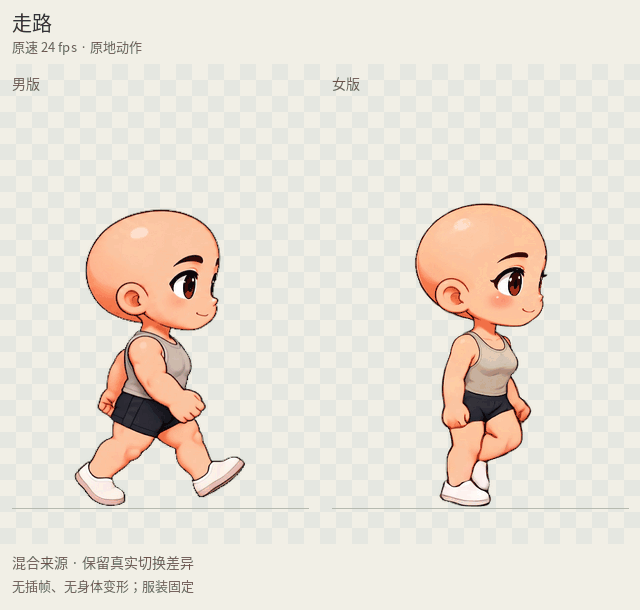
走路 2.25 秒 → 跑步 3 秒 → 原片连续两跳。两跳之间保留真实衔接，落地仍为浅蹲；结尾显示重播分隔，未伪装成无缝循环。
查看可拖进度的 MP4 · 男版 GIF · 女版 GIF男女动作候选
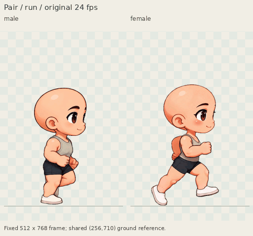
男女均为 18 帧 / 0.75 秒，使用较早版本中较合适的原速片段。
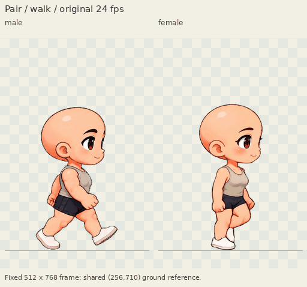
步频偏快，女版部分姿势像小跑，未验收为最终普通步行。
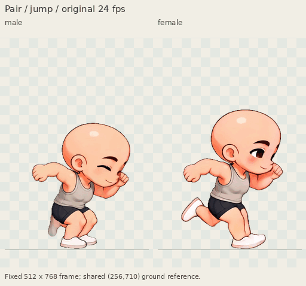
完整起跳与落地，停在最后一个原始姿势。不是无缝待机 → 跳跃 → 待机。
原速对比
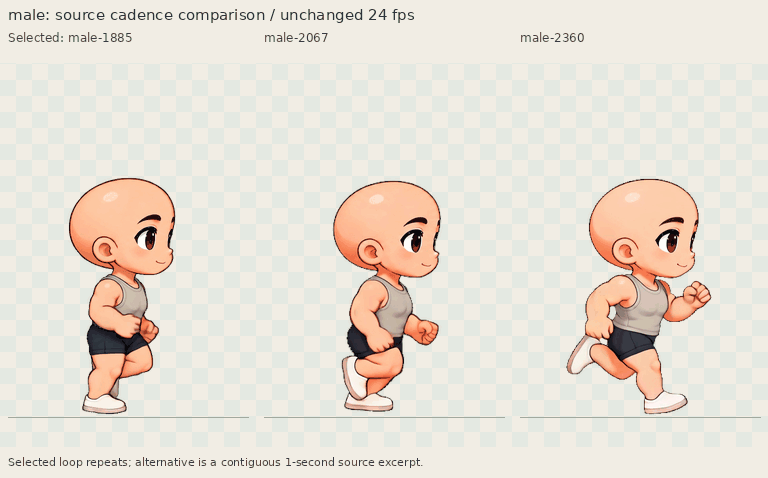
均为 24 fps。右侧为一秒连续源片段，不强行对齐步频。播放一次，点击重播。
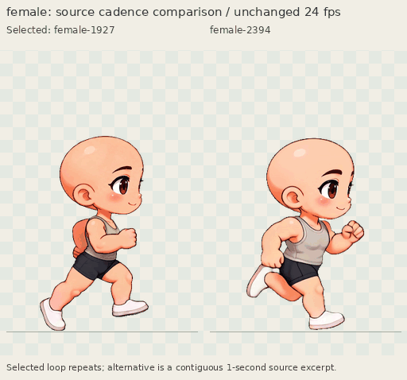
保留真实步频与姿势，便于比较较新版本是否确实更自然。
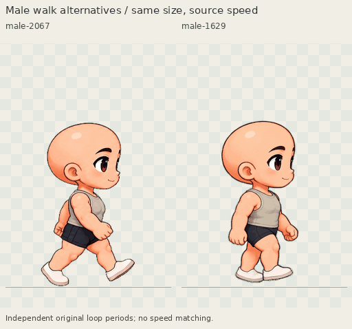
2067 接点较一致；1629 步频较慢，但首尾脚踝及画法变化更明显。
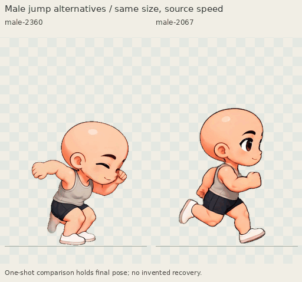
2360 保留双脚跳但缺待机收尾；2067 更接近跑动中的单腿起跳，有较完整的站立恢复。
真实动作切换
使用直接切换，保留缺失过渡与不同来源的画法差别。审阅序列中的循环重复和末帧停留不写入原始动作帧。
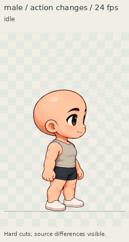
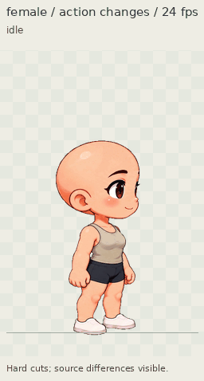
打开关键帧、接点与暗背景检查
原生 PNG 可点击单独打开。女版跳跃源帧 206、233 后颈仍有少量绿幕溢色，完整限制见说明。

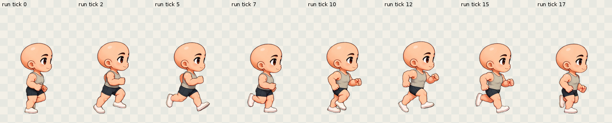

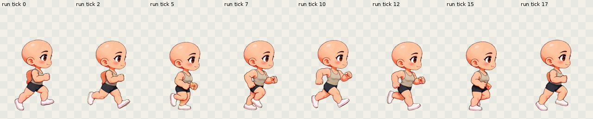

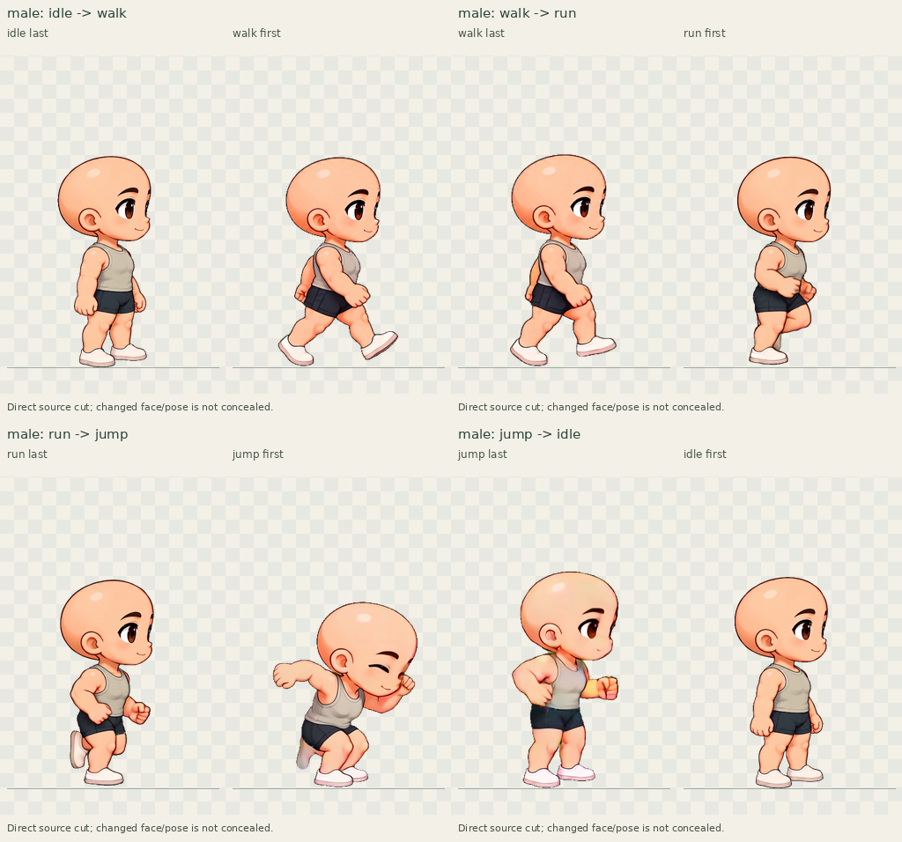

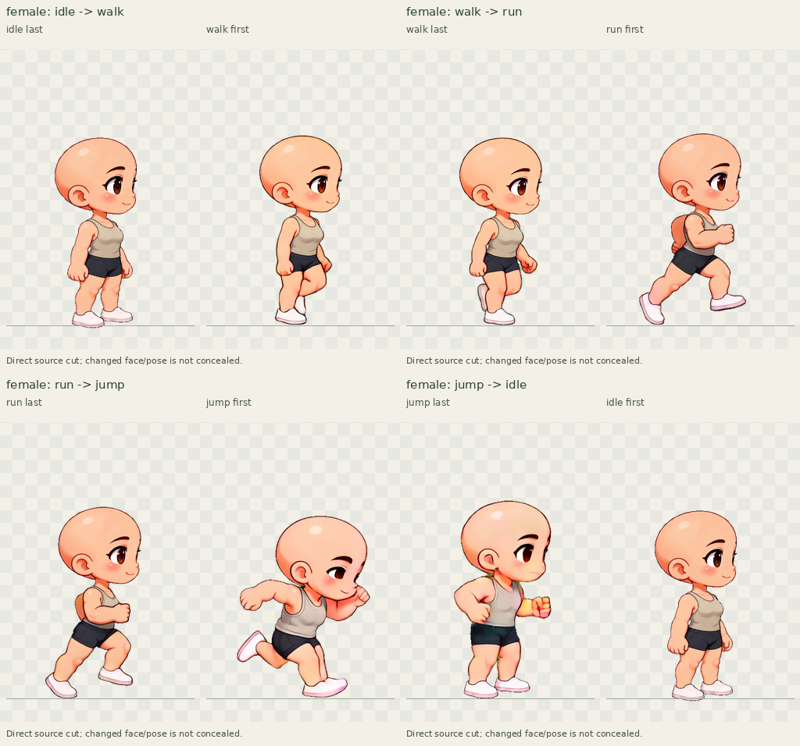

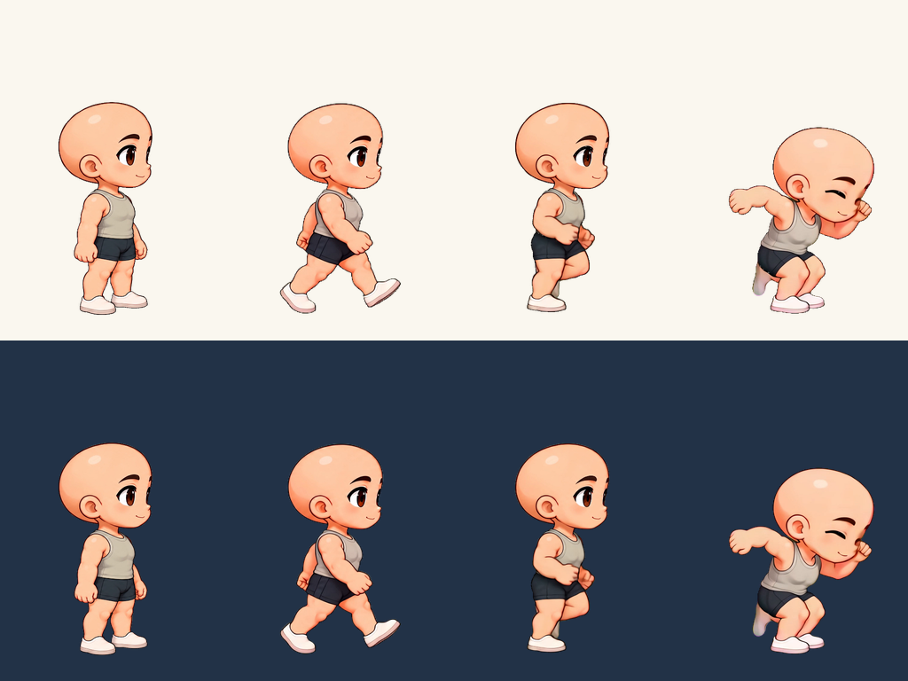

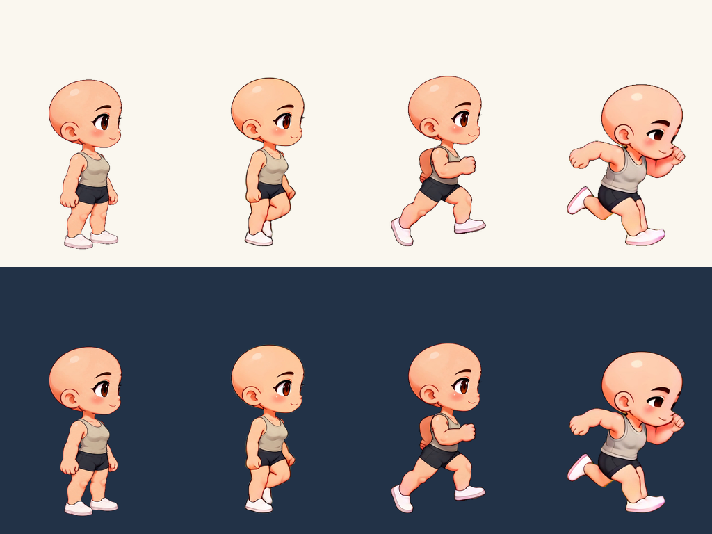